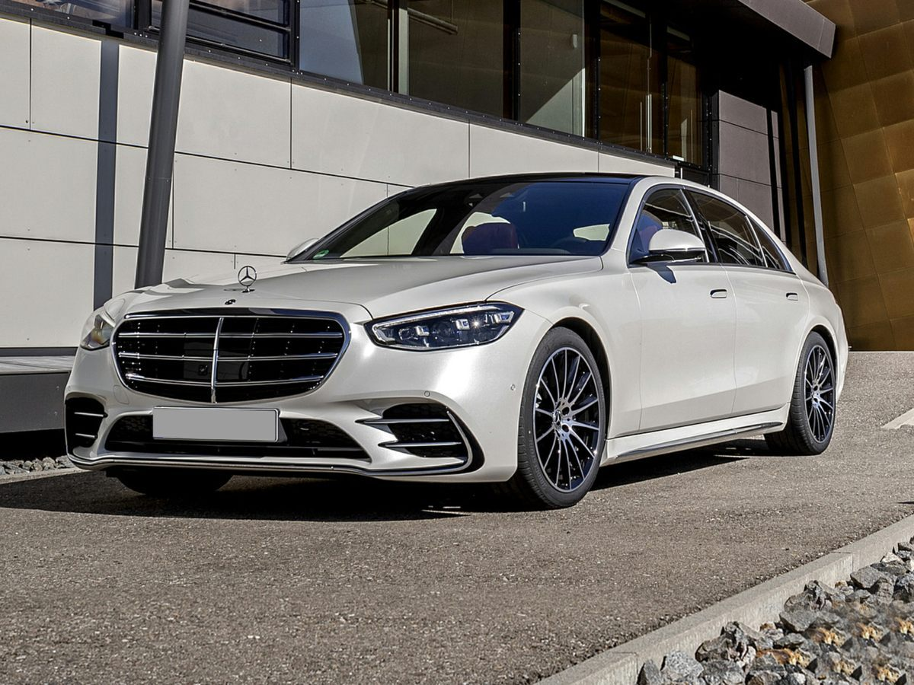
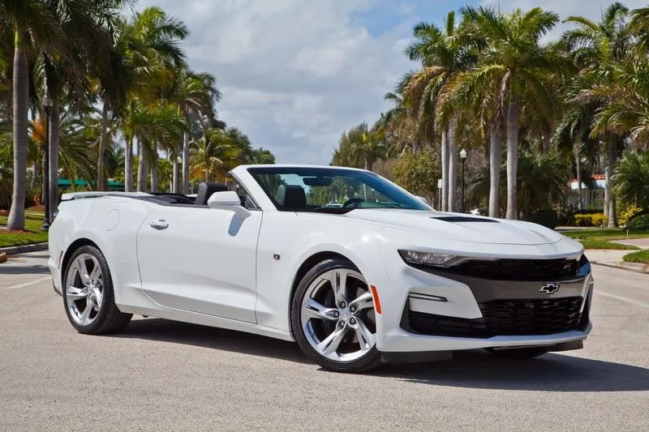

My Favorite Cars

I have always been fond of Cars since my childhood. I remember my dad used to buy me a Toy Car model of Porsche from 911 to cayenne from cayenne to cayman. From Mercedes C class to S550. I Have always liked cars and I still do very much.
Mercedes-Benz S-class 550
S-class 550 Has always been one of two of my favorite car. It falls under the sedan category of vehicles. It is a Luxury feeling that makes you want to buy it immediately and travel long distances. When You enter in Vehicles it welcomes you with a Glowing Mercedes strip Going all the way to the dashboard. its extravagant interior and exterior shape make it stand out.
Chevy Camaro
My Second Favourite Chevy Camaro SS or LT1
